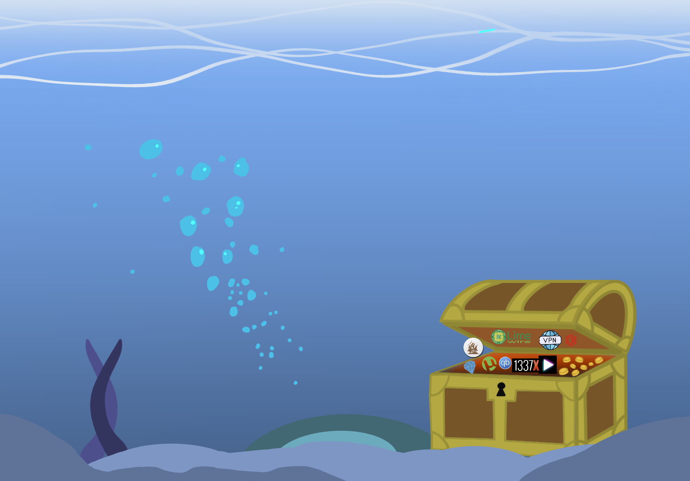

FMHY.net
Een hub voor allerlei verschillende hoeken piracy, denk hier niet alleen aan films of games, maar ook aan software, (school)boeken, AI, of operating systems.
thepiratebay.org (waybackmachine)
Bij verre de meest iconische plek voor al je online piraterijbenodigdheden in de jaren 2000. Over de jaren heen zijn er hier talloze politie raids over geweest, doelend op de servers offline halen.
Ondanks dat de piratebay deze dagen niet meer de titaan is die het twee decennia geleden wel was, is het door de gedecentraliseerde aard nog altijd online.
1337x
De moderne opvolger van The Pirate Bay, hier vind je deze dagen toegankelijk al je torrents.
r/Piracy subreddit
Een dunne lijn tussen legaal en illegaal, maar omdat het effectief alleen *praten* is over piracy, en niet het delen van bestanden (maar wel bronnen),
is het technisch gezien legaal, en daarbij een goede plek voor beginners om te leren hoe alles werkt.
crackrelease.com
Een informatiehub om te checken of specifieke software al gekraakt is. Dit is vooral handig bij recent gereleasede software waarvan je onzeker bent of het al out there is.
Als jou dus de nieuwste GTA 6 game bijvoorbeeld wordt aangeboden op een torrent platform, maar crackrelease zegt dat het nog niet gekraakt is, dan kan je gelijk deze crack aanbieder permanent excluderen van al je toekomstige piraterij praktijken.
The First Amendment:
Het Congres zal geen wet aannemen die een godsdienst vestigt of de vrije uitoefening daarvan verbiedt; of die de vrijheid van meningsuiting of van de pers inperkt; of het recht van het volk om vreedzaam bijeen te komen en de regering te verzoeken om herstel van grieven.
The Fourth Amendment:
Het recht van het volk om veilig te zijn in hun personen, huizen, papieren en bezittingen tegen onredelijke doorzoekingen en inbeslagnames mag niet worden geschonden, en er worden geen bevelschriften uitgevaardigd dan op grond van een gegronde reden, ondersteund door een eed of belofte, en met een specifieke beschrijving van de te doorzoeken plaats en de in beslag te nemen personen of zaken.